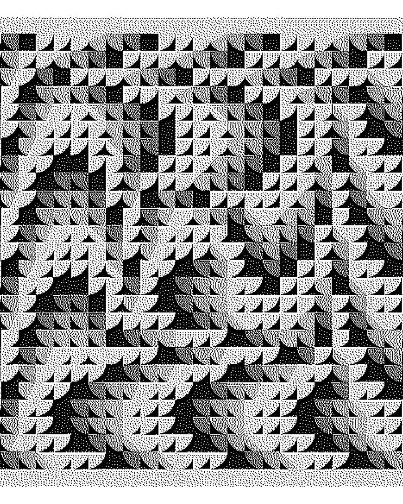

Андрій КальковAndrii Kalkov
Луцьк, УкраїнаLutsk, Ukraine
Візуальний митець.
Народився та проживає у Луцьку. У 2012-му захистив диплом спеціаліста за фахом монументального живопису Косівського Інституту Декоративного та прикладного Мистецтва Львівської Національної Академії Мистецтв. Кальков — учасник фестивалів урбаністичного мистецтва та численних колективних виставок на теренах України та світу, автор трьох персональних виставок у Луцьку.
Починаючи з 2009 року художник починає працювати над серією абстрактних робіт під назвою «Круговорот / Circulation». Основною ідеєю серії є закодована у модулях спіраль — символ вічного руху та пізнання.
Співпрацював з Bosch, Unit City, Ring Ukraine, Klo, Roshen, Urban Planet та ін. Учасник численних фестивалів вуличного мистецтва та міжнародних мистецьких виставок.
Картини художника знаходяться в приватних колекціях США, Бразилії, Франції, Чехії, Китаю, Нідерландів, Німеччини та ін.
Visual Artist.
Born and based in Lutsk. In 2012, he earned a Specialist Diploma in Monumental Painting from the Kosiv Institute of Decorative and Applied Arts of the Lviv National Academy of Arts. Kalkov is a participant in urban art festivals and numerous group exhibitions across Ukraine and internationally, as well as the author of three solo exhibitions in Lutsk.
Since 2009, the artist has been working on a series of abstract works titled “Circulation.” The core idea of the series is a spiral encoded within modules — a symbol of perpetual motion and cognition.
He has collaborated with Bosch, Unit City, Ring Ukraine, Klo, Roshen, Urban Planet, and others. A participant in numerous street art festivals and international art exhibitions.
The artist's paintings are held in private collections in the USA, Brazil, France, the Czech Republic, China, the Netherlands, Germany, and elsewhere.